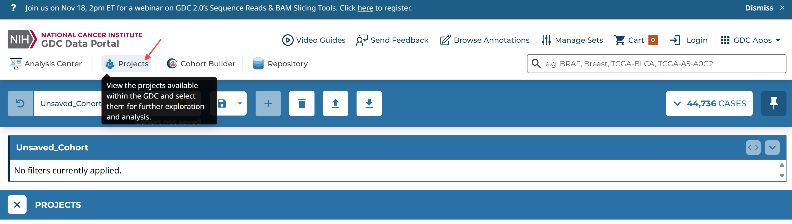
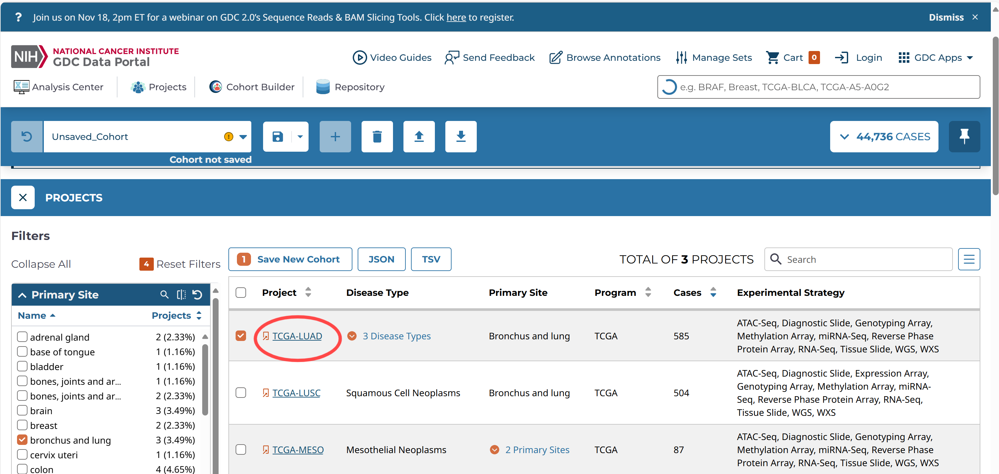
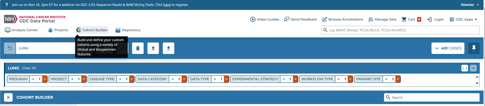
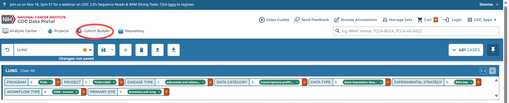
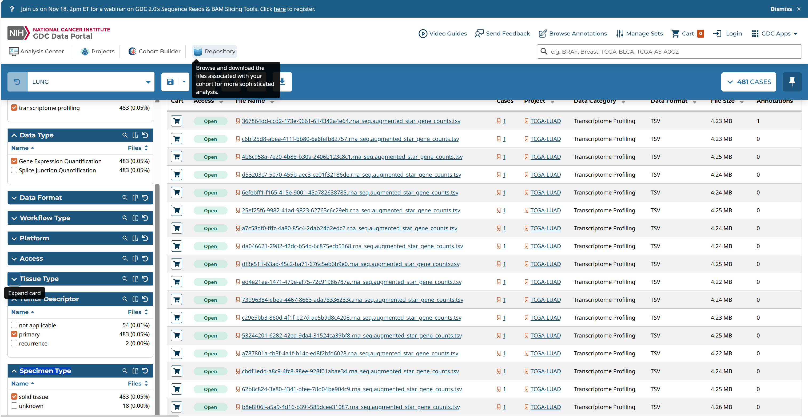
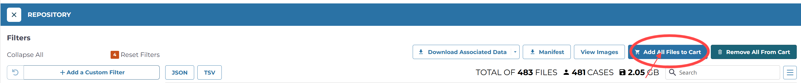
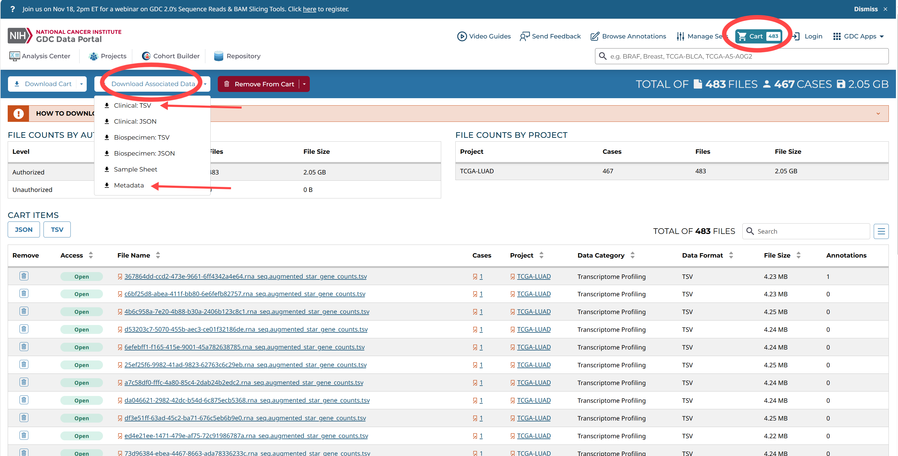
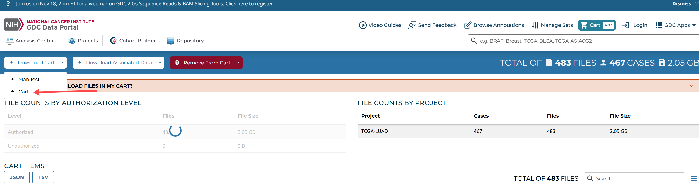
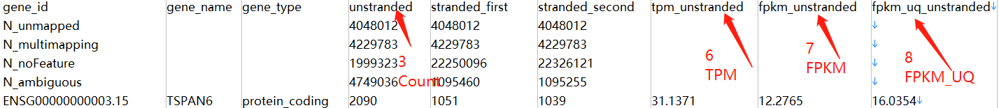

参考资料
数据下载
可以从Projects中查找，也可以自定义队列。
已有项目
以肺腺癌数据（TCGA-LUAD）为例。首先要先整理出该癌症的基因表达矩阵。（也有一些数据库提供整理好的TCGA癌症数据，如UCSC xena数据库对TCGA数据进行了整理，可直接下载表达矩阵和临床数据用于研究）

Projects -->
Primary Site: bronchus and lung
Program: TCGA
Data Category: transcriptome profiling
Experimental Strategy: RNA-Seq
project: TCGA-LUAD

自定义项目

Cohort Builder -->
general -->
Program: TCGA
project: TCGA-LUAD
Disease Type: adenomas and adenocarcinomas
Available data -->
Data Category: transcriptome profiling
Data Type: Gene Expression Quantification
Experimental Strategy: RNA-Seq
Workflow Type: STAR-Counts（即HTSeq-Counts、HTSeq-FPKM、HTSeq-FPKM-UQ数据都放入了文件STAR–Counts中）

转到存储库（Repository），选择自己的cohort，选择自己需要的数据类型

全部添加到cart



样本id
包括文件信息和样本barcode的关系
Show the code
library(jsonlite)
metadata <- jsonlite::fromJSON("data/metadata.cart.2024-07-04.json") |> as_tibble()
sample_info <- metadata %>%
select(associated_entities,file_name) %>%
unnest(associated_entities) %>%
select(sample_id =entity_submitter_id,file_name)
sample_info %>% head()
# A tibble: 6 × 2
sample_id file_name
<chr> <chr>
1 TCGA-38-7271-01A-11R-2039-07 98d020b1-0467-4131-a3cc-64d288d0e9e7.rna_seq.aug…
2 TCGA-55-7914-01A-11R-2170-07 22002e84-1d7a-4f93-9934-9d74f45195c0.rna_seq.aug…
3 TCGA-95-7043-01A-11R-1949-07 d067f93b-7182-4a34-ba8e-be73589b7420.rna_seq.aug…
4 TCGA-73-4658-01A-01R-1755-07 367864dd-ccd2-473e-9661-6ff4342a4e64.rna_seq.aug…
5 TCGA-86-8076-01A-31R-2241-07 34774d7b-1184-4b5f-b6a9-e16c428ca7ce.rna_seq.aug…
6 TCGA-55-7726-01A-11R-2170-07 74ab82a4-a55b-4e4c-b3f5-1f9317860914.rna_seq.aug…
表达矩阵
Show the code
#获取gdc_download文件夹下的所有TSV表达文件的 路径+文件名
counts_file <- list.files("data/gdc_download_20240704_131631.625023",pattern = "*.tsv",recursive = TRUE,full.names = T)
counts_file[1]
[1] "data/gdc_download_20240704_131631.625023/0052ae83-7ae5-470a-a125-5cd94a9fa9e9/a6a6b9c6-9db7-42b3-a09f-770b7e126fbb.rna_seq.augmented_star_gene_counts.tsv"
Show the code
# 使用 basename() 获取最终的文件名
counts_file_names <- basename(counts_file)
counts_file_names[1]
[1] "a6a6b9c6-9db7-42b3-a09f-770b7e126fbb.rna_seq.augmented_star_gene_counts.tsv"
Show the code
path = counts_file[1]
data.table::fread(input = counts_file[1],sep = "\t") %>%
select(1,4) %>%
filter(row_number()>4) %>%
column_to_rownames(var = "gene_id") %>%
head() ->x
colnames(x) <-sample_info %>%
filter(file_name == counts_file_names[1]) %>%
pull(sample_id)
x
TCGA-35-5375-01A-01R-1628-07
ENSG00000000003.15 3715
ENSG00000000005.6 0
ENSG00000000419.13 2468
ENSG00000000457.14 249
ENSG00000000460.17 395
ENSG00000000938.13 150

Show the code
gene_expr <- function(file_path, file_basename) {
# 读取并处理数据
expr <- data.table::fread(input = file_path,sep = "\t") %>%
select(1, 4) %>%
dplyr::filter(row_number() > 4) %>%
column_to_rownames(var = "gene_id")
# 将列名替换为样本ID
colnames(expr) <- sample_info %>%
dplyr::filter(file_name == file_basename) %>%
pull(sample_id)
return(expr)
}
expr1 <- gene_expr(file_path = counts_file[1],
file_basename = counts_file_names[1])
expr1 %>% head()
TCGA-35-5375-01A-01R-1628-07
ENSG00000000003.15 3715
ENSG00000000005.6 0
ENSG00000000419.13 2468
ENSG00000000457.14 249
ENSG00000000460.17 395
ENSG00000000938.13 150
Show the code
expr_list <- vector("list", length(counts_file))
expr_list <- purrr::map2(counts_file,counts_file_names, gene_expr)
expr_counts <- do.call(cbind, expr_list)
write.csv(expr_counts,'data/Counts_matrix.csv',row.names = TRUE)
normal 和 tumor
根据TCGA样本的命名可以区分正常组织和肿瘤样本的测序结果 其中 14、15位置编号大于10 表示正常
Show the code
COUNT_matrix <- data.table::fread('data/COUNT_matrix.csv')
str_sub(colnames(COUNT_matrix),14,15) |> table()
临床表型数据
Show the code
metadata <- jsonlite::fromJSON("data/metadata.cart.2024-07-04.json")
case_info <- metadata %>%
select(associated_entities,file_name) %>%
unnest(associated_entities) %>%
select(sample_id = entity_submitter_id,case_id)
case_info %>% head()
# A tibble: 6 × 2
sample_id case_id
<chr> <chr>
1 TCGA-38-7271-01A-11R-2039-07 8214a0d1-5e2d-4a7a-acb1-e5580755db83
2 TCGA-55-7914-01A-11R-2170-07 69dba721-a168-47a4-b7ff-80a448bad654
3 TCGA-95-7043-01A-11R-1949-07 c650b1ff-8a4c-4ee9-b7c1-268c28c83827
4 TCGA-73-4658-01A-01R-1755-07 afb91740-2668-46d7-ba01-bb26153ad1c7
5 TCGA-86-8076-01A-31R-2241-07 8609edfc-119d-4d63-9188-c86aabd5ca52
6 TCGA-55-7726-01A-11R-2170-07 923b37e4-fcf7-46a0-8cb2-9139711fec7b
Show the code
clinical <- read_delim('data/clinical.cart.2024-07-04/clinical.tsv',col_names = T)
clinical <- clinical |> distinct(case_id,.keep_all = TRUE)
clinical_matrix <- left_join(case_info ,clinical,by = join_by(case_id))
clinical_matrix <- clinical_matrix |> select(-case_id)